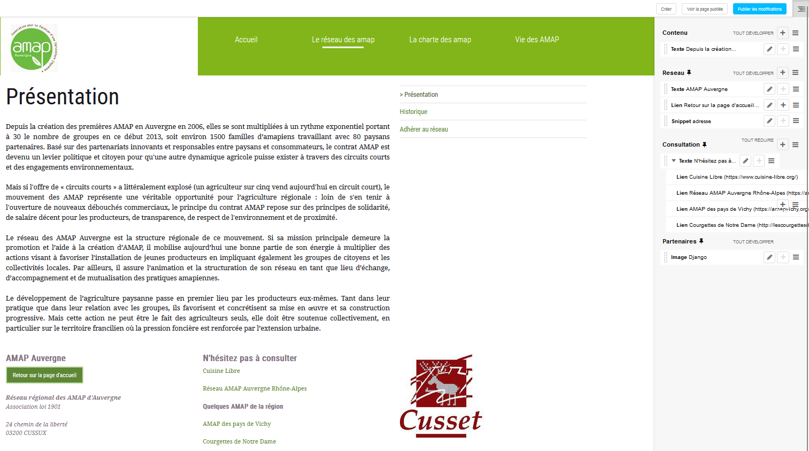
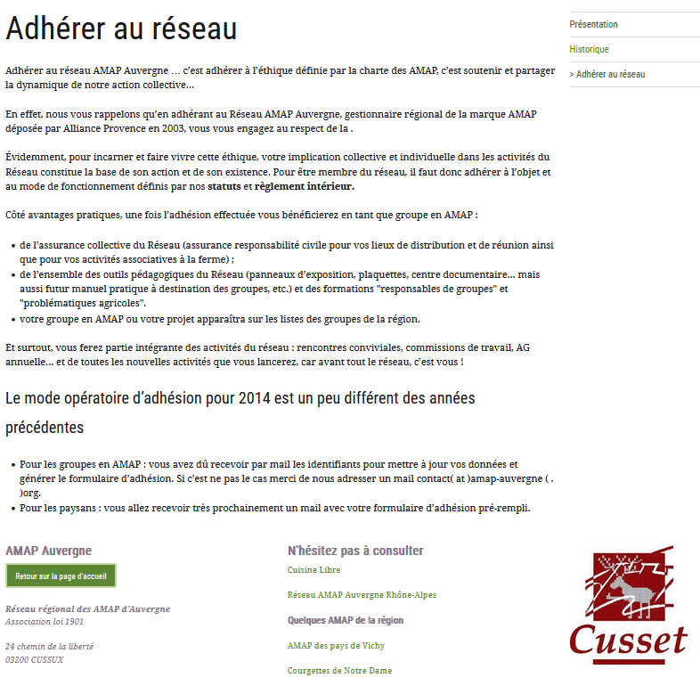
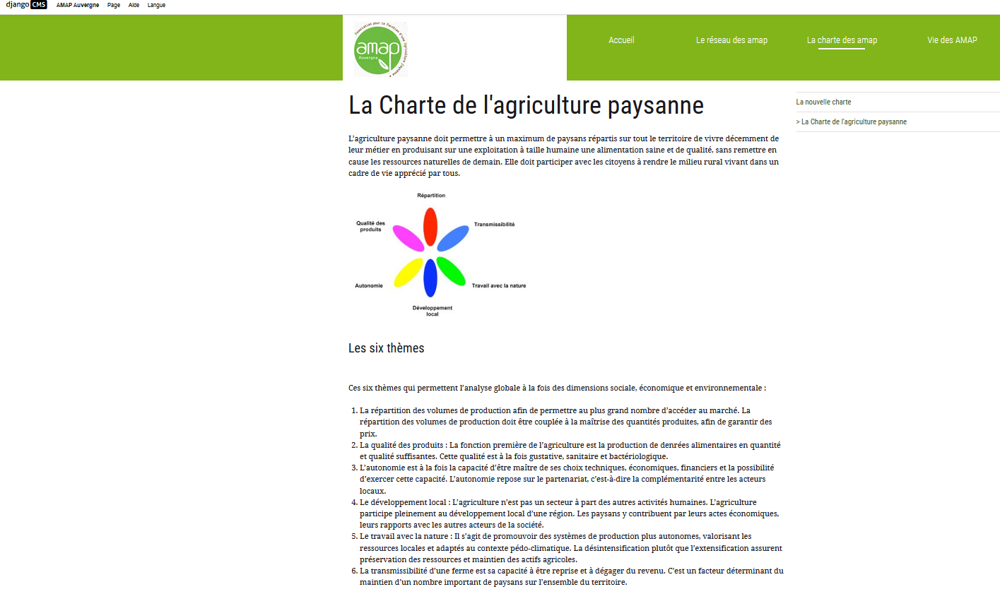
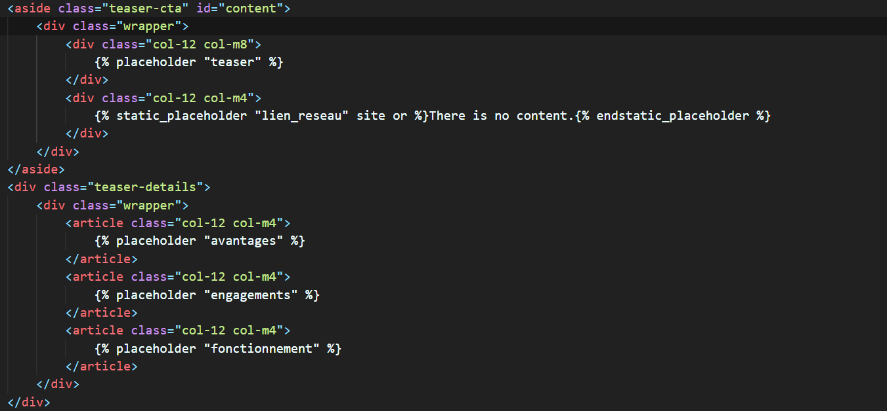
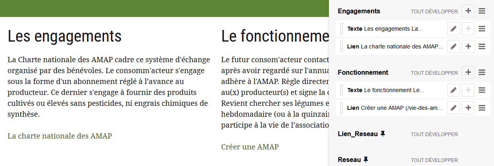
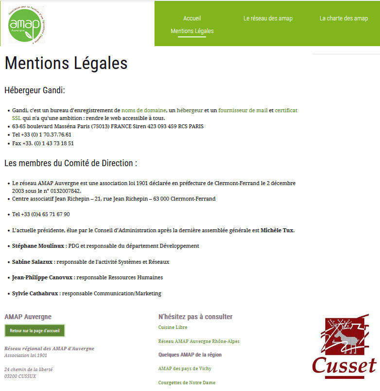
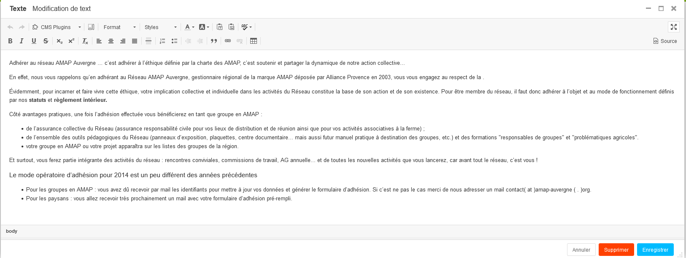
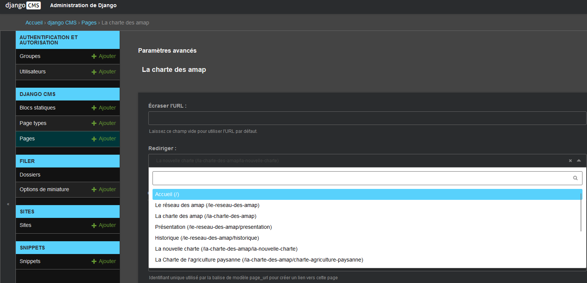

Site vitrine du réseau AMAP Auvergne avec Django CMS
Contexte :
Ce TP a été réalisé seul et nous avions comme objectifs :
- Comprendre le fonctionnement de Django CMS
- Faire les modifications demander

Notre professeur nous avait donné un document nous expliquant qu’est-ce qu’un CMS ainsi que son fonctionnement à l’aide du site vitrine AMAP Auvergne, hébergé sur une machine virtuelle LAMP et propulsé par un serveur Apache. Nous avions à modifier ce site tout au long de la séquence afin de comprendre le fonctionnement de Django CMS.


Nous devions modifier à l’aide de l’interface graphique tant que c’était possible (ajout lien, texte, image) sur la page. Si nous devions ajouter des emplacements ou autre nous devions passer par le code HTML afin de les rajouter manuellement.


À l’aide du logiciel libre Matomo écrit en PHP nous avions pu mettre en place un système de mesure d’audience grâce à une interface graphique simple d’utilisation semblable à google Analytics.
Environnement technologique :
- Vscodium
- Thunar
- FileZilla
- Firefox
- Virtual Box
compétences mobilisées :
- B1.3.1 : Participer à la valorisation de l’image de l’organisation sur les médias numériques en tenant compte du cadre juridique et des enjeux économiques
L’utilisation de Matomo permet de respecter la confidentialité des données, l’anonymisation de l’adresse IP. Même si l’interface graphique est assez simple d’utilisation l’implémentation dans le second site AMAP a été plus complexe, car je ne savais pas où implémenter l’extrait de code fournit par Matomo dans le site.
Des mentions légales ont été mises en place concernant l’hébergeur et les dirigeants pour être conformes au cadre juridique. Cette implémentation a été réalisée en ajoutant une page grâce à Django qui à rajouter un bouton qui dirige vers cette nouvelle page avec les informations demander à l’intérieur.

- B1.3.3 : Participer à l’évolution d’un site Web exploitant les données de l’organisation
Nous avons pu réaliser les ajouts des différentes pages et liens sur le site vitrine AMAP conforme à l’attente demander de notre professeur malgré quelques erreurs dues à une mauvaise maîtrise de django CMS(utilisation des mauvais outils) qui après une relecture du support a pu être facilement corrigé.

